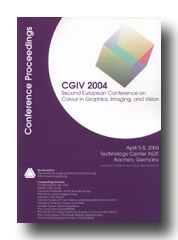

Bookstore
Search Abstracts
Upcoming Events
Join IS&T Now
Publications Catalog |
|

CGIV 2004 -- Second European Conference on Color in Graphics, Imaging and Vision
Aachen, Germany
April 2004 , Volume 2
ISBN / ISSN: 0-89208-250-X
570 pages
Member Price: $75.00
Non-Member Price $95.00
© 2004 The Society for Imaging Science and Technology
The following papers are included in this publication. To read the abstract, click on the paper title.
You may purchase the full text of these papers in PDF format from the asbtract-view screen, or you may return to this page to purchase a hardcopy of the entire publication.
- Color Science and Digital Color Reproduction: Delivering on the Promise
John Meyer; Hewlett Packard Laboratories (USA) pages 1-1.
- Normal Color Constancy: Not a Unitary Phenomenon?
David H. Foster; Visual and Computational Neuroscience Research Group, University of Manchester Institute of Science and Technology (UK) pages 2-7.
Françoise Vienot, Muséum National d'Histoire Naturelle
- The CIE94 Colour Difference Formula for Describing Visual Detection Thresholds in Static Noise
Marcel Lucassen and Piet Bijl; Vision & Imaging Group, TNO Human Factors (Netherlands) pages 8-11.
- Colour Appearance for Dissimilar Sizes
Kaida Xiao¹, Changjun Li¹, Ronnier Luo¹ , and Celia Taylor²; ¹Colour & Imaging Institute, University of Derby, ²ICI-Paint (UK) pages 12-16.
- Surround - the New Background?
Phil Green¹ and M. Ronnier Luo²; ¹Colour Imaging Group, London College of Commuunication, ²Colour & Imaging Institute, University of Derby (UK) pages 17-23.
- Exploring Colour Constancy Solutions
Francesc Tous, Maria Vanrell, and Ramon Baldrich; Computer Vision Center, Dept. d'Informàtica, Universitat Autònoma de Barcelona (Spain) pages 24-29.
- Computational Model for Chromaticity Differences
Toni Kuparinen, Arto Kaarna, and Pekka Toivanen; Lappeenranta University of Technology (Finland) pages 30-35.
- Comparison Between the Number of Discernible Colours in a Digital Camera and the Human Eye
J. Pujol¹, F.M. Martínez-Verdú², M.J. Luque³, P. Capilla³, and M. Vilaseca¹; ¹Center for Sensors, Instruments and Systems Development (CD6), Technical University of Catalonia, ²Dept. of Optics, University of Alicante, ³ Dep. of Optics, University of Valencia (Spain) pages 36-40.
Olivier Colot, University of Lille (France) and Patrick Herzog, Color Aixperts GmbH (Germany)
- Apparel Products Simulation Using Texture Mapping with Color Fidelity
J.H. Xin, H.L. Shen, and P. Wang; Institute of Textiles & Clothing, The Hong Kong Polytechnic University (China) pages 41-45.
Roy Berns, Rochester Institute of Technology
- Motion Influences the Effects of Systematic Chromatic Changes
Peggy Gerardin¹, Philippe Roud¹, Sabine Süsstrunk¹, and Kenneth Knoblauch²,³; ¹Ecole Polytechique Fédéral de Lausanne (EPFL) (Switzerland), ²Inserm U371 Cerveau et Vision (France), ³Institut Federatif des Neurosciences de Lyon (France) pages 46-50.
Olivier Colot, University of Lille (France) and Patrick Herzog, Color Aixperts GmbH (Germany)
- Invariant Features for Colored Textured Surfaces Moving in a 3D Environment
Jacques Brochard, Majdi Khoudeir, and Anis Ben Slimane; IRCOM-SIC, Université de Poitiers (France) pages 91-95.
Olivier Colot, University of Lille (France) and Patrick Herzog, Color Aixperts GmbH (Germany)
- What is Controlling Chromatic Contrast in a Complex Scene?
Margalith Harrar¹ and Françoise Viénot²; ¹Laboratoire de Psychologie Expérimentale, Université René Descartes and ²Centre de Recherches sur la Conservation des Documents Graphiques, Muséum national d’Histoire naturelle, Paris (France) pages 51-54.
- On Definitions and Construction of Uniform Color Space
Jinhui Chao, Ikue Osugi, and Masaki Suzuki; Chuo University (Japan) pages 55-60.
- Comparison of the Primary Spectra and Colour Triangles Associated to Several Digital Cameras
F.M. Martinez-Verdú¹, J. Pujol², M.Vilaseca², D. de Fez¹, V. Viqueira¹ , and P. Capilla³; ¹Dept. of Optics, University of Alicante, ²Center for Sensors, Instruments and Systems Development (CD6), Technical University of Catalonia, ³ Dept. of Optics. University of Valencia (Spain) pages 61-64.
- Colorimetric Characterisation of a HD-PDP Device
Gábor Kutas, and Peter Bodrogi; University of Veszprém (Hungary) pages 65-69.
- Colour Size Effect
Gábor Kutas, Katalin Gócza, Peter Bodrogi, and János Schanda; University of Veszprém (Hungary) pages 70-73.
- Achromatic Induction of Contrast Threshold in Spatial Frequency Modulation
E. Jafarzadehpur¹, S.M.P. Firoozabadi², B. Hashemi², S.M.M Shushtarian³, and A. Kazemnezhad ²; ¹Iran University of Medical Science, ²Tarbiat Modares University, ³Azad University Medical Center (Iran) pages 74-76.
- Chromatic Opponency: Hypotheses and Psychophysical Performance
Claudio Oleari; Università di Parma, Dipartimento di Fisica (Italy) pages 77-82.
- Consideration on Hunt Effect Based on Maximum Color Separation Model
Nobuhito Matsushiro¹,² and Noboru Ohta¹; ¹Munsell Color Science Laboratory, Center for Imaging Science (USA) and ²Visiting Scientist from Oki Data Corporation (Japan) pages 83-85.
- Computational Adaptation Model and its Predictions for Color Induction of First and Second Orders
Hedva Spitzer and Yuval Barkan; Tel Aviv University (Israel) pages 86-90.
Olivier Colot, University of Lille (France) and Patrick Herzog, Color Aixperts GmbH (Germany)
- Estimation of Illuminant Chromaticity Based on CCD Camera Response Distribution in Real-World Image
Oh Seol Kwon, Yang Ho Cho, Yun Tae Kim, and Yeong Ho Ha; Kyungpook National University (Korea) pages 96-99.
- Color Image Indexing Based on Photometric Invariant Salient Features
Thierry Dorval, Christophe Laurent, and Nathalie Laurent; France Telecom R&D - DIH/HDM (France) pages 100-105.
- Testing Spectral Sensitivity of Sensors for Color Invariant at a Pixel
Javier Romero, Javier Hernández-Andrés, Juan Nieves, and Eva Valero; University of Granada (Spain) pages 106-109.
- A Multispectral Approach to Robust Human Skin Detection
Moritz Störring, Hans J. Andersen, and Erik Granum; Computer Vision and Media Technology Laboratory, Aalborg University (Germany) pages 110-115.
- Color Selections for Characterization Charts
Tsz Lock Vien Cheung and Stephen Westland; Colour & Imaging Institute, University of Derby (UK) pages 116-119.
Olivier Colot, University of Lille (France) and Patrick Herzog, Color Aixperts GmbH (Germany)
- Highlight Detection by 2D-Histogram Analysis
Allan Hanbury; Vienna University of Technology (Austria) pages 167-172.
Olivier Colot, University of Lille (France) and Patrick Herzog, Color Aixperts GmbH (Germany)
- Transform Principal Component Analysis of Spectral Images
Vladimir Botchko¹,Timo Jaaskelainen², and Jussi Parkkinen³; ¹Department of Information Technology, Lappeenranta University of Technology, ²Department of Physics, University of Joensuu, ³Department of Computer Science, University of Joensuu (Finland) pages 120-124.
- Optical Color Pattern Recognition Based on Linear Models of Surface and Illuminant Spectra
Juan L. Nieves, Javier Hernández-Andrés, Eva Valero, and Javier Romero; Universidad de Granada (Spain) pages 125-129.
- Segment Cluster Tracking
Mark Ross; University of Koblez (Germany) pages 130-134.
- Fuzzy Colour Naming Based on Sigmoid Membership Functions
Robert Benavente and Maria Vanrell; Computer Vision Center, Dept. Informàtica, UAB (Spain) pages 135-139.
- Building Perceived Colour Images
Xavier Otazu and Maria Vanrell; Computer Vision Center, Dept. d'Informàtica, UAB (Spain) pages 140-145.
Olivier Colot, University of Lille (France) and Patrick Herzog, Color Aixperts GmbH (Germany)
- DCT-Based Watermarking Method Using Color Components
G. Lo-Varco, W. Puech, and M. Dumas; University of Montpellier II (France) pages 146-150.
- Efficient Descriptors of Hue Distributions from Kernel Density Estimators and Fourier Transforms
Linh V. Tran and Reiner Lenz; Department of Science and Technology, Linköping University (Sweden) pages 151-155.
- Calculating a Color Gamut Border Using a Grid Approach
Andreas Willert, Martin Flaspöhler, and Arved Carl Hübler; Chemnitz Technical University (Germany) pages 156-160.
- Colorfulness Enhancement in -λSY Color Space
Philippe Colantoni, Nicolas Bost, and Alain Trémeau; Laboratoire LIGIV - Université Saint Etienne (France) pages 161-166.
- An Unsupervised Color Image Segmentation Based on Morphological 2D Clustering and Fusion
Olivier Lezoray; LUSAC EA (France) pages 173-177.
- Watermarking of Color Images Based on Segmentation of the XYZ Color Space
Chareyron Gaël¹, Benoit Macq², and Alain Tremeau¹; ¹LIGIV, Université Jean Monnet (France), ²TELE, Université Catholique de Louvain (Belgium) pages 178-182.
- Gray-Centered RGB Color Space
Stephen Sangwine and Todd Ell; University of Essex (UK) pages 183-186.
- A Proposal for Contrast Measure in Digital Images
Alessandro Rizzi¹, Thomas Algeri¹, Giuseppe Medeghini¹, and Daniele Marini²; ¹Dipartimento di Tecnologie dell'Informazione, Università di Milano, ²Dipartimento di Informatica e Comunicazione, Università di Milano (Italy) pages 187-192.
- Independent Component Analysis with Different Daylight Illuminants
Eva M. Valero, Juan L. Nieves, Javier Hernandez-Andres, and Javier Romero; University of Granada (Spain) pages 193-196.
- Estimating the Usefulness of Preprocessing in Colour Image Segmentation
Henryk Palus; Silesian University of Technology (Poland) pages 197-200.
Roy Berns, Rochester Institute of Technology
- Methods of Quality Assessment for Large Sample Sets
Phil Green¹ and Siv Lindberg²; ¹ Colour Imaging Group, London College of Communication (UK) and ²Swedish Pulp and Paper Research Institute Ab (Sweden) pages 201-206.
- Sensitivity Curve Approximation Using Linear Algebra
Dietrich Paulus¹, V. Hong¹, Corvin Idler¹, Joachim Hornegger², and Laszlo Csink³; ¹Univesität Koblenz-Landau, Copmputervisualistik (Germany), ²Univesität Erlangen-Nürenburg (Germany), ³Institute of Informatics, Budapest Polytechnic (Hungary) pages 207-212.
- Optical and Colorimetric Characterisation of a Micro Mirror Based Spectral Image Capturing System
Martin Flaspöhler, Andreas Willert, and Arved C. Hübler; Chemnitz Technical University (Germany) pages 213-218.
Yoichi Miyake, Chiba University
- Spectrophotometric Scanner for Imaging of Paintings and Other Work of Art
G. Antonioli, F. Fermi, C. Oleari, and R. Reverberi; Università di Parma, Dipartimento di Fisica (Italy) pages 219-224.
- Synthesizing an Image Invariant to Illumination Geometry when the Illumination Spectrum cannot be Measured
Masaru Tsuchida¹,², Takahito Kawanishi¹, and Shigeru Takagi¹; ¹NTT Communication Science Laboratories, NTT Corporation (Japan) and ²Currently Research and Development Headquarters, NTT-DATA Corporation (Japan) pages 225-228.
- A New Multi-spectral Imaging System for Examining Paintings
Haida Liang¹, David Saunders¹, John Cupitt¹, and Mohamed Benchouika²; ¹The National Gallery, London (UK) and ²Université Pierre and Marie Curie pages 229-234.
- Achieving a Multi-Spectral Virtual Reality
Franz Herbert¹, Jo Kirkenaer¹, and Oliver Unter Ecker²; ¹Integrated Color Solutions, Inc. (USA) ²Kula, Hawaii (USA) pages 235-241.
Reiner Lenz, Linköping University
- Estimation of Control Values for a 6-Primary Display Considering Different Observers
Thomas Boosmann and Bernhard Hill; Aachen University of Technology (Germany) pages 242-247.
- Wide Gamut Multi Primary Display for HDTV
Moon-Cheol Kim, Yoon-Cheol Shin, Young-Ran Song, Sang-Jin Lee, and Il-Do Kim; Video Lab., AV Solution Team, Digital Media Network R&D Center, Samsung Electronics Co. Ltd. (Korea) pages 248-253.
- Algorithms for Spectral Color Stimulus Reconstruction with a Seven-Channel Multispectral Camera
Stephan Helling¹, Enrico Seidel¹, and Wolfram Biehlig²; ¹RWTH Aachen, ²JENOPTIK LDT GmbH (Germany) pages 254-258.
- Application of Spectral Estimation Techniques to the Improvement of a 3D-Colour Digitizing Camera
Réjean Baribeau; National Research Council Canada (Canada) pages 259-262.
- Characterization of an Eight Colorant Inkjet System for Spectral Color Reproduction
Jon Y. Hardeberg and Jeremie Gerhardt; Gjøvik University College (Norway) pages 263-267.
Patrick Herzog, Color Aixperts GmbH (Germany)
- Using the SpectraCube to Build a Multispectral Image Database
Graham D. Finlayson, Steven D. Hordley, and Peter Morovic; University of East Anglia, School of Computing Sciences (UK) pages 268-274.
- Finding Representatives in a Large Dataset of Spectral Reflectances
Silvio Borer and Sabine Süsstrunk; Ecole Polytechique Fédéral de Lausanne (EPFL) (Switzerland) pages 275-280.
- A Visual Evaluation of the Image Reproduced by Color Decomposition Based on Spectral Approximation for Multiprimary Display
Toshio Uchiyama¹, Masahiro Yamaguchi¹,², Hideaki Haneishi¹,³, and Nagaaki Ohyamaa²; ¹Telecommunication Advancement Org. of Japan, ²Tokyo Institute of Technology, and ³Chiba University (Japan) pages 281-285.
- A Numerical Comparison of Several Metrics for Spectral Match
J. A. Stephen Viggiano; Acolyte Color Research (USA) pages 286-291.
Marc Mahy, Agfa-Gevaert N.V.
- Reflectance Modeling of an Anisotropic Surface : The Ham
Michèle Gouiffès¹, Pascale Marty Mahé¹, Alain Trémeau², and Christine Fernandez Maloigne³; ¹Cemagref, ²Université Jean Monnet, ³Université de Poitiers (France) pages 292-297.
- A New Method for Assessing Gloss Based on Digital Imaging
W. Ji¹, M. R. Luo¹, C. Li¹, G. Cui¹, and M.R. Pointer²; ¹Colour & Imaging Institute, University of Derby, ²The National Physical Laboratory (UK) pages 298-302.
- Improved CFA Interpolation Approach
Rastislav Lukac¹, Konstantinos N. Plataniotis¹, Dimitrios Hatzinakos¹, and Bogdan Smolka²; ¹University of Toronto (Canada), ²Silesian University of Technology (Poland) pages 303-306.
- Photoacoustic Study of Printed Samples
Markéta Držková, Lenka Otáhalová, and Marie Kaplanov; University of Pardubice (Czech Republic) pages 307-310.
Dietrich Paulus, University of Koblenz
- Spatio-Chromatic PCA of a Mosaiced Color Image
David Alleysson¹ and Sabine Süsstrunk²; ¹University Pierre-Mendes France (France),²Ecole Polytechnique Fédéral de Lausanne (Switzerland) pages 311-314.
- Illuminant Invariant Chromaticity Distribution Coding Using the Fourier Power Spectrum
J. Berens and G. D. Finlayson; University of East Anglia (UK) pages 315-320.
- Accurate Measurement of Full Spectral Reflectance Texture by Removing Shadow and Illuminant Effects
Nobuhiko Tamura, Norimichi Tsumura, and Yoichi Miyake; Department of Information and Image Science, Chiba University (Japan) pages 321-325.
- Tuning Retinex for HDR Images Visualization
Davide Gadia¹, Daniele Marini¹, and Alessandro Rizzi²; ¹Dip. Informatica e Comunicazione, Università degli Studi di Milano, ²Dip. Tecnologia dell'Informazione, Università degli Studi di Milano (Italy) pages 326-331.
- Evaluation of Texture Mapping Algorithms
B. Han, G. Hong, G. Cui, and M.R. Luo; Colour & Imaging Institute, University of Derby (UK) pages 332-336.
Christine Fernandez, University of Poitiers
- Quality Assessment of the JPEG 2000 Compression Standard
Úlfar Steingrímsson and Klaus Simon; Swiss Federal Laboratories for Material Testing and Research (Switzerland) pages 337-342.
- Image Retrieval Using Spatial Chromatic Histograms
P. Lambert¹, N. Hervey¹, and H. Grecu²; ¹Laboratoire d'Informatique, Systèmes et de Traitement de l'Information LISTIC - University of Savoie (France), ²Laboratorul de Analiza si Prelucrarea Imaginilor (Romania) pages 343-347.
- When Good Hues Go Bad
Lawrence Taplin and Garrett Johnson; Rochester Institute of Technology (USA) pages 348-352.
- Adaptive Color Quantization using the "Baker's Transform"
Christophe Montagne¹, André Smolarz², Sylvie Lelandais¹, and Philippe Cornu²; ¹Complex Systems Laboratory, University of Evry, ²Laboratory of Systems Modeling and Safety, Univeristy of Technology of Troyes (France) pages 353-358.
- Color Image Enhancement Using a Retinex-Based Adaptive Filter
Laurence Meylan and Sabine Süsstrunk; Ecole Polytechnique Fédéral de Lausanne (EPFL) (Switzerland) pages 359-363.
- Comparing Methods for Compressing Spectral Reflectance
Changjun Li¹ and M Ronnier Luo²; ¹Shenyang Institute of Automation, Chinese Academy of Sciences (China) and ²Colour & Imaging Institute, University of Derby (UK) pages 364-367.
Olivier Colot, University of Lille (France) and Patrick Herzog, Color Aixperts GmbH (Germany)
- Color Differences in a Spectral Space
Diana Kalenova, Pekka Toivanen, and Vladimir Botchko; Lappeenranta University of Technology (Finland) pages 368-371.
- Methods to Organize Spectral Image Database
Oili Kohonen¹, Markku Hauta-Kasari², Kanae Miyazawa³, Jussi Parkkinen², and Timo Jääskeläinen¹; ¹Department of Physics, University of Joensuu (Finland), ²Department of Computer Science, University of Joensuu (Finland), ³Department of Information and Computer Sciences, Toyohashi University of Technology (Japan) pages 372-375.
- Estimation of Just-Noticeable Differences in Multispectral Color Space
Irina Mironova and Pekka Toivanen; Department of Information Technology, Lappeenranta University of Technology (Finland) pages 376-378.
- Optimal Spectral Sensitivities of a Color Image Acquisition Device in the Presence of Noise
Noriyuki Shimano; Department of Informatics, School of Science and Engineering, Kinki University (Japan) pages 379-383.
- Multispectral Experimentations for Turkey Meat Quality Analysis during Storage
Anne-Claire Legrand, Pascale Marty-Mahe, and Philippe Loisel; ¹Laboratoire LIGIV (France), ²Cemagref (France) pages 384-387.
Patrick Herzog, Color Aixperts GmbH (Germany)
- Spectral Reflectance-Based Modeling of Human Skin and its Application
Motonori Doi, Norihiro Tanaka, and Shoji Tominaga; Osaka Electro-Communication University (Japan) pages 388-392.
Olivier Colot, University of Lille (France) and Patrick Herzog, Color Aixperts GmbH (Germany)
- An Empirical Approach for Spectral Color Printers Characterization
Raimondo Schettini¹, Daniela Bianucci¹, Giancarlo Mauri¹, and Silvia Zuffi²; ¹DISCO, Università degli Studi di Milano Bicocca, ²ITC-CNR, Milano (Italy) pages 393-397.
- Multidimensional Median Filtering of Spectral Images
Pekka Toivanen, Jarkko Vartiainen, and Arto Kaarna; Lappeenranta University of Technology (Finland) pages 398-402.
- Calibration and Spectral Reconstruction for an Art Painting Multispectral Acquisition System
A. Ribés, F. Schmitt, and H. Brettel; Ecole Nationale Supérieure des Télécommunications (France) pages 403-408.
- Multispectral System for Recovering Near-Infrared Reflectance Spectra
Montserrat Arjona, Meritxell Vilaseca, Jaume Pujol, and Francisco Miguel Martínez-Verdú; Center for Sensors, Instruments and Systems Development (CD6), Department of Optics and Optometry, Technical University of Catalunya (Spain) pages 409-413.
- Modeling Gonio-Spectral Reflection Properties of Paper Sheets for Efficient Gonio Imaging
Yoshinori Akao¹, Norimichi Tsumura², and Yoichi Miyake²; Chiba University (Japan) pages 414-417.
- Optimal Spectral Sensitivities of a Multispectral Image Acquisition System
Javier Hernández-Andrés, Eva M. Valero, Juan L. Nieves, and Javier Romero; Departamento de Óptica, Universidad de Granada (Spain) pages 418-421.
- Training Set and Filters Selection for the Efficient Use of Multispectral Acquisition Systems
Raimondo Schettini¹ , Gianluca Novati¹ ², and Paolo Pellegri¹ ²; ¹DISCo, University of Milano - Bicocca, Milano, ²ITC, National Research Council, Milano (Italy) pages 422-426.
- Imaging Spectrograph Based Spectral Imaging System
Hannu Laamanen¹,Timo Jaaskelainen¹, Markku Hauta-Kasari¹, Jussi Parkkinen¹, and Kimiyoshi Miyata²; ¹University of Joensuu (Finland) and ³National Museum of Japanese History (Japan) pages 427-430.
- Color Visualization System for Near-Infrared Multispectral Images
Meritxell Vilaseca¹, Jaume Pujol¹, Montserrat Arjona¹, and Francisco Miguel Martínez-Verdú²; ¹Technical University of Catalunya and ²University of Alicante (Spain) pages 431-436.
- Spectral and Colorimetric Characterization of the CRISATEL Acrylic Colour Chart
M. Benchouikha¹, S. Sautrot¹, F. Haned¹, H. Liang², C. Lahanier³, and G. Alquié¹; ¹LISIF, Université Pierre et Marie Curie (France), ²The National Gallery, London (UK), ¹C2RMF, Musée du Louvre (France) pages -.
- Group Theoretical Investigations of Daylight Spectra
Thanh Hai Bui¹, Reiner Lenz¹, and Tomas Landelius ²; ¹ Linköping University, ²Swedish Meteorological and Hydrological Institute (Sweden) pages 437-442.
Olivier Colot, University of Lille (France) and Patrick Herzog, Color Aixperts GmbH (Germany)
- A Unified Model for Optical and Physical Dot Gain in Printing
Li Yang; Campus Norrköping, Linköping University (Sweden) pages 443-448.
- Projector Color Reproduction Adapted to the Colored Wall Projection
Masato Tsukada¹ and Johji Tajima²; ¹NEC Corporation and ²Nagoya City University (Japan) pages 449-453.
- Adaptive Re-Rendering of CMYK Image Data
Johan Lammens¹, Jan Morovic¹, Mary Nielsen², and Huan Zeng³; Hewlett-Packard Company (¹Barcelona, Spain, ²Boise, ID, USA, ³Vancouver, WA, USA) pages 454-458.
- Evaluation of Current Color Management Tools: Image Quality Assessments
Hendrik Büring¹, Patrick G. Herzog¹, and Eggert Jung²; ¹Aachen University, ITE, ²NexPress GmbH (Germany) pages 459-462.
- Dot for Dot Proofing
Stefan Livens; Agfa-Gevaert N.V. (Belgium) pages 463-468.
Olivier Colot, University of Lille (France) and Patrick Herzog, Color Aixperts GmbH (Germany)
- Camera's Performance in Measuring Small Color Differences in the Nearly Neutral Region
María S. Millán and Edison Valencia; Dep. Optica i Optometria, Universitat Politècnica de Catalunya (Spain) pages 469-474.
- The Colorimetric Properties of the Deinked Pulp from Digital Prints
Ivana Bolanca and Zdenka Bolanca; Faculty of Graphic Arts, University of Zagreb (Croatia) pages 475-478.
- A New Method for Assessing Textile Fastness Based on Digital Imaging
M. Ronnier Luo¹, Guihua Cui¹, Bryan Rigg¹ , and John Dakin²; ¹University of Derby, ²DigiEye Plc. (UK) pages 479-483.
- Digital Image Analysis for Colorimetric Surface Inspection of Paint Coatings Stressed by Materials Testing
Carsten Steckert; Federal Institute for Materials Research and Testing, BAM (Germany) pages 484-488.
- Simulating Color Changes Due to Coating of Offset Prints
Johannes Hoffstadt; Ebner & Spiegel GmbH (Germany) pages 489-493.
Jussi Parkkinen, University of Joensuu
- PCA Component Mixing for Watermark Embedding in Spectral Images
Arto Kaarna, Vladimir Botchko, and Pavel Galibarov; Lappeenranta University of Technology (Finland) pages 494-498.
- Time-Frequency Analysis of Color Spectra
Reiner Lenz; Department of Science and Technology, Linköping University (Sweden) pages 499-504.
- New Linear Prediction Model for Lossless Compression of Hyperspectral Images
Olga Kubasova and Pekka Toivanen; Lappeenranta University of Technology (Finland) pages 505-508.
- Time-Frequency Analysis for Multi-Channel Color Pattern Recognition
Reiner Lenz and Javier Hernández-Andrés; Linköping University (Sweden), Granada University (Spain) pages 509-514.
Sabine Süsstrunk, Swiss Federal Institute of Technology (EPFL)
- A New Color Image Zooming Technique for Digital Still Cameras
Rastislav Lukac¹, Konstantinos N. Plataniotis¹, Bogdan Smolka², and Dimitrios Hatzinakos¹; ¹University of Toronto (Canada), ²Silesian University of Technology (Poland) pages 515-519.
- Enhancing the SGCK Colour Gamut Mapping Algorithm
Ivar Farup, Jon Y. Hardeberg, and Morten Amsrud; Gjøvik University College (Norway) pages 520-524.
- Restoration of Continuous Tone Images from Digital Color Halftone Images Based on Fourier Analysis of Local Areas
Johji Tajima¹ and Masato Tsukada²; ¹Nagoya City University and ²NEC Corporation (Japan) pages 525-530.
- Scanning Laser Projection Display and the Possibilities of an Extended Color Space
Christhard Deter and Wolfram Biehlig; JENOPTIK LDT GmbH (Germany) pages 531-535.
Jean-Pierre Van De Capelle, Xerox Corporation
- Color Correction by Calculating a Metamer Boundary Descriptor
Philipp Urban¹ and Rolf-Rainer Grigat²; ¹Ratio Entwicklungen GmbH, ²Technische Universität Hamburg-Harburg (Germany) pages 536-541.
- Learning to Display High Dynamic Range Images
Jiang Duan¹, Guoping Qiu¹, and Graham Finlayson²; ¹The University of Nottingham, ²The University of East Anglia (UK) pages 542-547.
- Gamut Clipping and Mapping Based on Coloroid System
Laszlo Neumann¹ and Attila Neumann²; ¹Graphics Group of Girona, University of Girona and ICREA (Spain) and ²Institute of Computer Graphics, Technical University of Vienna (Austria) pages 548-555.
- Calibrated Colour Mapping Between LCD and CRT Displays: A Case Study
Bill Cressman¹,², Behnam Bastani¹, and Brian Funt¹; ¹Simon Fraser University, ²Hewlett Packard (Canada) pages 556-563.